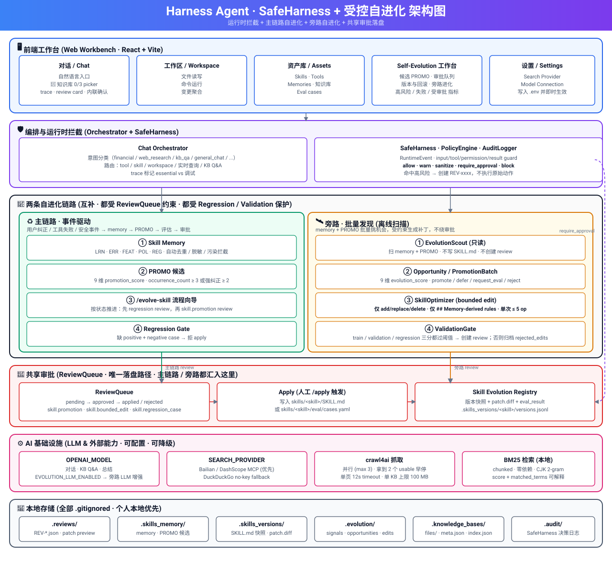

不让 Agent 无约束地修改自己——而是验证一条 受控自进化 链路：SafeHarness 拦截、ReviewQueue 唯一落盘、两条互补的进化链路共享同一道审批关。
Harness Agent 是一个本地优先的 SafeHarness + Self-Evolving Skills 实验系统。它让 Agent 可以从自己的运行经验中学习并更新 skill，
但所有真实修改都必须经过 SafeHarness 拦截 + ReviewQueue 审批 + 回归测试 + 显式 apply + 版本登记。
核心命题：memory / PROMO / patch 都可以自动提议；但 SKILL.md 的真实修改必须经过人手 approve + apply。
RuntimeEvent → PolicyEngine → allow / warn / sanitize / require_approval / block。命中 require_approval 时不执行原始动作，转为创建 review。
pending → approved → applied / rejected。/approve 只产 diff，/apply 才落盘。SKILL.md 的真实修改没有第二条路径。
事件驱动：用户纠正 / 工具失败 / 安全事件 → memory → PROMO → regression case → skill.promotion review。
离线批量扫描：Scout 只读发现机会，Optimizer 产 bounded edit，ValidationGate 把守，通过则汇入同一个 ReviewQueue。
六层视角：前端工作台 · 编排与 SafeHarness · 两条自进化链路 · 共享审批 ReviewQueue · AI 基础设施 · 本地存储。

主链路是事件驱动的细粒度学习，旁路是批量扫描的离线补丁。两者共享同一个 ReviewQueue 和 Skill Evolution Registry。
occurrence_count ≥ 3（强纠正 ≥ 2）/evolve-skill <promo_id>/evolution-scan## Memory-derived rules，仅 add/replace/delete，单次 ≤ 5 op共享：同一 ReviewQueue · 同一 Skill Evolution Registry · 同一 Approve + Apply。
每条 memory / PROMO / RunTrace 走五个阶段，决定它最终落在哪个决策桶里。代码：runtime/evolution_scout.py。
normalized_problem_signature：action / tool / error_type / artifact / correction| # | 触发条件 | 决策 |
|---|---|---|
| 0 | 攻击载荷 / quarantined=True（Stage 1 单独成桶） |
quarantine |
| 1 | security_incident 标签 |
safety_review |
| 2 | policy_gate：tag ∈ {policy_related, policy_candidate, governance_related, tool_failure}，或 content 含 policy_block / approval_block / Tool Call Blocked / SafeHarness policy / protected file / policy_candidate / safety …，或 features.safety_type ∈ {approval_block, secret_leak, injection, policy_violation}，或 features.error_type = policy_block |
safety_review requires_policy_review=true |
| 3 | target_skill = self_improvement，value ≥ 0.55 |
request_eval needs_human_label=true |
| 4 | target_skill = self_improvement，value < 0.55 |
defer needs_human_label=true |
| 5 | value ≥ 0.60 ∧ risk ≤ 0.35 ∧ testability ≥ 0.70 |
promote |
| 6 | value ≥ 0.55 且（testability < 0.70 或 risk > 0.35） |
request_eval |
| 7 | value ≥ 0.40 ∧ evidence < 0.50 |
defer |
| 8 | overfitting ≥ 0.5 ∧ Σf < 3 |
reject |
| 9 | value ≥ 0.30 / 其他 |
defer / reject |
硬闸（0–4）排在 promote（5）之前——任何 security / policy / governance / approval / protected_file / self_improvement 信号在到达 promote 规则之前就被拦下。policy_review / request_human_label 当前不是独立的 decision 枚举值，落在 safety_review / defer 上，再用 reason 里的 requires_policy_review=true / needs_human_label=true 标记。
围绕 ChatOrchestrator.handle 的一条 observability 链。每个环节只读 / 只补统计——不动 SKILL.md，不动 memory 文件，不绕 ReviewQueue。
runtime/skill_router.pydeterministic keyword + history rate + positive_credit 加成 − failure 惩罚。self_improvement 默认排除，低置信请求回落到现有 executor 逻辑，不强行绑定。
runtime/skill_profile.py每个 skill 的成功 / 失败 / 阻塞 / 反馈 计数。失败仅 skill_gap / rule_not_applied 计入，工具/环境/审批失败不动 counter。
runtime/credit_assignment.py8 类 failure_source × 4 类 positive_credit。should_generate_learning_signal 把工具/环境/审批失败挡在 LearningSignal 之外，避免错误沉淀。
runtime/memory_utility.py每条 memory 的 utility_score = 0.40·success + 0.30·positive_feedback + 0.10·freshness − 0.20·failure，clamp [0,1]。当前只产 stat，retrieval 不变。
runtime/run_trace_scanner.py把 skill-side 失败 / 用户偏好的 RunTrace 转候选 signal 喂给 Scout：source_type=run_trace、source_ref=RUN-xxxxxxxx。injection → quarantined；无 skill 归属 → request_human_label。
web/ui/src/pages/RunsPage.jsxSelf-Evolution → Runs tab：表格列出 run_id · outcome · primary_failure_source · should_emit；点击展开完整 trace JSON。只读视图，不触发任何 PROMO 或 skill 改动。
用户只点「创建」；系统在后台完成草稿暂存、安全检查、风险分级、自动上架或进入 ReviewQueue。普通用户只看 5 个状态：草稿 / 系统校验中 / 待审查 / 已上架 / 未通过。
TOOL_NOT_ACTIVEruntime/asset_creation_pipeline.pyrejection phrase（ignore previous instructions / bypass approval / disable safety / 忽略系统提示 / 绕过审批 …）→ blocked；high-risk phrase（secret / credential / api key / os.system / subprocess.* …）→ high；capability mention（tool / file / workspace / network …）→ medium；其余 → low。落到 skills/<name>/.lifecycle.json。
entry_type ∈ {shell, exec, subprocess, write_file, delete_file, fs_write, fs_delete, execute_command} → high；缺 inputs schema → medium；network-class 工具没 network_domain_allowlist → high；high-risk tool 的 default_policy=allow 自动降级为 require_approval 并写 issue。
runtime/asset_lifecycle.py.lifecycle.json 记 lifecycle_status / risk_level / review_id / audit_ref。无 marker = active（向后兼容已有 skill / tool）。安全检查详情进 audit log 和 review metadata，仅管理员可见。
前端 scoutViewModel.js 把 raw opportunity / batch / edit 收敛成四个类别。非 Skill 类卡片永远不会显示「生成变更草稿」按钮，并明显标注「该事件不属于 Skill 优化，不会生成 SKILL.md 补丁」。
| 类别 | 触发 | 主按钮 |
|---|---|---|
| Skill 优化 | decision ∈ {promote, request_eval, defer} 且无 policy/tool 标记、非 self_improvement | 生成回归测试 / 生成变更草稿 / 忽略 |
| 策略 / 安全事件 | policy_gate 命中 / decision ∈ {safety_review, quarantine} / 内容含 policy_block / approval_block / Tool Call Blocked / SafeHarness policy / protected file … | 进入策略审查 / 继续观察 / 忽略 |
| 工具 / 能力问题 | tag ∈ {tool_failure, capability_gap}；target_skill 以 tool 开头 | 创建工具审查 / 继续观察 / 忽略 |
| 需人工标注 | target_skill=self_improvement 或 reason 含 needs_human_label=true | 标注归属 Skill / 忽略 |
工程字段（OPP / SIG / BATCH / EDIT id、score、value/risk/evidence/testability、raw tags、edit_ops、must_not_regress、add → ## Memory-derived rules、tag:foo|bar、reduce repetition of pattern …）统一收到「展开技术细节」折叠区。Tab：发现的问题 / 建议处理 / 变更草稿 / 已忽略。
所有进化必须可追溯：memory → PROMO → regression REV → skill patch REV → approve → apply → version。下面这些规则在测试里被反复钉死。
/approve 只产 diff，/apply 才落盘；缺 regression coverage 时 apply 拒绝。should_generate_learning_signal 在转 LearningSignal 前拦截；RunTraceScanner / SkillProfile / MemoryUtility 三处再加一层，tool_failure / environment / policy_block 都不计 counter、不进 Scout opportunity。policy_gate 硬闸。cluster 命中 policy_block / approval_block / Tool Call Blocked / SafeHarness policy / protected file 等 → 强制 safety_review，再高的 value/testability 也不能 promote。self_improvement。低置信请求回落到现有 executor 逻辑，不会被强行绑定到自我改进通道。redact_secrets + looks_like_memory_poisoning 清洗，命中即回退 deterministic。add/replace/delete 在 ## Memory-derived rules。evaluator / scorer / regression gate 不能被 Scout 或 Optimizer 修改。shell / write_file / fs_delete 等高风险 Tool 永远不 auto-activate；high-risk Tool 的 default_policy=allow 自动降级为 require_approval；pending_review 的 skill 不会被 SkillRouter 加载，pending_review 的 tool 不会被 ToolRegistry 执行。features.safety_type / error_type 命中 policy_block / approval_block / Tool Call Blocked / SafeHarness policy / protected file / policy_candidate / governance_related / tool_failure 任一 → Optimizer 拒绝生成 skill.bounded_edit / skill.promotion，附 requires_policy_review=true。model_call 步骤，区分「模型回答」和「兜底回答」并写出 whether_llm_called / model_name / fallback_reason。Python 3.10+。本地优先，所有产物都落到 .gitignored 的本地目录。
python -m venv .venv && source .venv/bin/activate
pip install -r requirements.txt
cp .env.example .env
# CLI
python harness/agent_harness.py
# Web 后端
uvicorn web.server:create_app --factory --reload --port 8000
# Web 前端
cd web/ui && npm install && npm run dev.env）OPENAI_API_KEY=...
MODEL_ID=... # CLI / agent_harness
OPENAI_MODEL= # web server / chat orchestrator
OPENAI_BASE_URL=
# 实时查询 provider：Bailian / DashScope > DuckDuckGo no-key fallback
SEARCH_PROVIDER=bailian
DASHSCOPE_API_KEY=...
SEARCH_TOOL_NAME=auto
# 旁路 Scout / Optimizer 默认 deterministic；接 LLM：
# EVOLUTION_LLM_ENABLED=1python -m unittest
python -m compileall harness runtime tools safety
echo q | python harness/agent_harness.py
cd web/ui && npm run buildharness_agent/
├─ harness/ # REPL、主循环、prompt、任务、消息、teammate
├─ runtime/ # ReviewQueue · Skill 加载 · memory · 主链路进化 · chat
│ # 旁路：evolution_scout · skill_optimizer · scout_decisions
│ # 工具：skill_eval_runner · knowledge_base · kb_index · tool_registry
│ # 观测：run_trace · credit_assignment · run_trace_scanner
│ # 路由 & 统计：skill_router · skill_profile · memory_utility
│ # 资产创建：asset_creation_pipeline · asset_lifecycle
├─ safety/ # SafeHarness 事件 · 决策 · 策略 · guard · 审计
├─ tools/ # OpenAI tool schema + handler 分发
├─ skills/ # Skill 定义 · memory · eval cases · profile.json
├─ web/ # FastAPI server + React/Vite 工作台
├─ docs/ # 设计文档 + architecture.svg
└─ tests/ # self_improvement · evolution pipeline · scout · run_trace · kb · web API.gitignore）.tasks/ · .team/ · .transcripts/ · .audit/（含 runs/RUN-*.json） · .reviews/ · .skills_memory/（全局 memory + utility.jsonl + scanner 状态）· .skills_versions/ · .evolution/ · skills/*/memory/ · skills/*/profile.json。也别提交 .env。
左侧导航 5 项，统一走 Paginator 分页（10/页），EN / 中文切换由 LanguageProvider 接管。
自然语言入口，复用所有审批与版本规则；输入框带"📎 知识库 N/3"选择器。
文件读写、命令运行。
Skills / Tools / Workflows / Memories / Knowledge bases / Eval cases。
5 个 tab：候选 PROMO / 审批队列 / 版本与回滚 / 旁路进化（问题发现与处理工作台） / Runs。旁路进化界面把发现分成 Skill 优化 / 策略 · 安全事件 / 工具 · 能力问题 / 需人工标注 四类，工程字段折叠在「展开技术细节」里。
Provider 配置 + 模型连接（写入 .env 并 in-process 生效）。